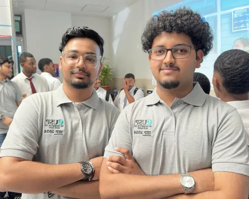
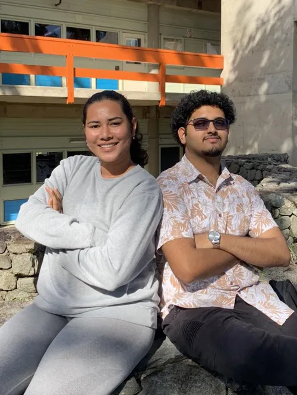

NFL Win Probability Engine
Built a live game-state model and visualization workflow for faster sideline and broadcast insights.
Data Scientist · Applied Math · Software Builder
I am Muneer Khan, focused on analytics, product-minded engineering, and communication that helps teams make better decisions. This portfolio is a clean home for my work, experience, and writing.


Built a live game-state model and visualization workflow for faster sideline and broadcast insights.
Designed constrained optimization experiments to evaluate price tiers and demand tradeoffs.
Shipped early-warning churn diagnostics with repeatable intervention playbooks for customer teams.
Built predictive models and decision tools that translated directly into product and business actions.
Applied statistical and optimization methods to practical systems with measurable outcomes.
Turned complex analysis into concise narratives, dashboards, and presentations for stakeholders.